05 - Count models
Centre for Biological Control
Rhodes University, South Africa
Email: g.sutton@ru.ac.za
Gaussian data is rare
- All the analyses so far have assumed that we are dealing with normal (Gaussian) distributed data that can be measured as whole numbers with decimal places (e.g. height, weight, diameter).
- However, most data in the real world either do not conform to the normal distribution, or they cannot be measured as numbers with decimal places, and can’t be analysed with Gaussian models.
- For example:
- Counts (e.g. species abundances, days till an event) which are measured as integers (cannot take a decimal place),
- Binary data (e.g. dead/alive, 1/0, present/absent),
- Proportion data (e.g. proportion survival, anything measured on a scale of [0,1])
- But, GLM’s can easily be extended to fitting count models and proportion/binary data
Count data
- Count data is ubiqutous in ecology.
- e.g. No. of FCM per fruit
- e.g. No. of ticks per zebra
- e.g. Abundances of impala per hectare in the Kruger National Park
- Counts (or abundances) are defined as non-negative integers
- I.e. They cannot take a decimal place
- e.g. 0 FCM per fruit, 7 ticks on a zebra, 385 impala per hectare
- NOT: 33.15 psyllids per leaf
- ALSO NOT: 27% of the flies dead
Counts are not normal (literally)
- Counts typically do not conform to assumptions of normality for statistical tests
- Count data typically follows a strong mean-variance relationship
- In many count datasets, there are many zeros and small counts, and successively fewer larger counts
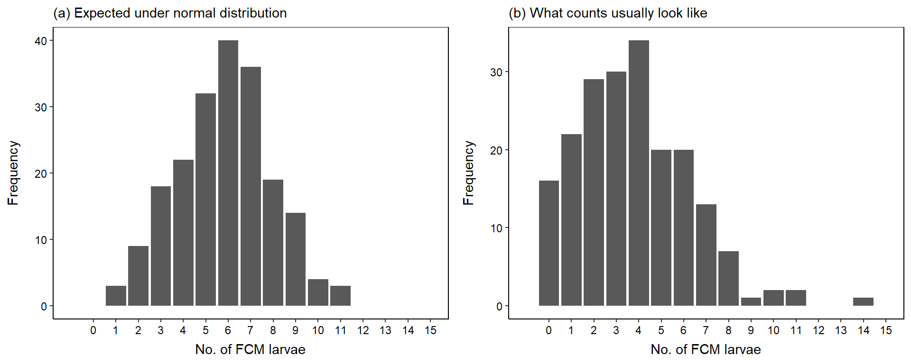
Count models
- There are two basic options for modelling count data:
- Poisson GLM - The poisson distribution assumes the mean = variance.
- Negative binomial GLM - Expects more variance than the Poisson. Variance > mean.
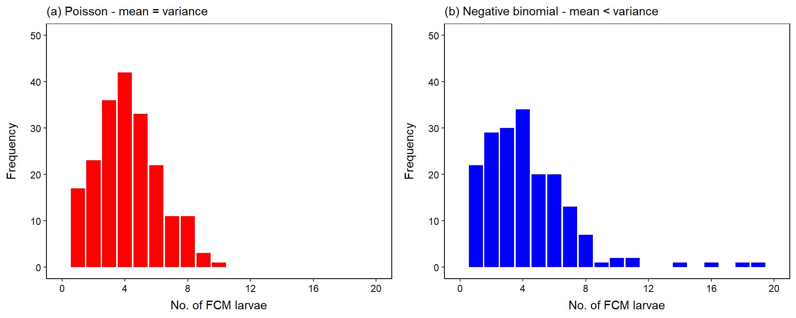
Count models in R
- Assuming our question is: Does Y vary based on X?
- Poisson GLM:
mod_poisson <- glm(Y ~ X, family = poisson(link = "log"), data = data)
- Negative binomial GLM:
mod_nb <- glmmTMB::glmmTMB(Y ~ X, family = nbinom2, data = data, REML = FALSE)
An example
- I have simulated some data representing 100 FCM females who have been measured (
body_length), and the number of eggs in their ovaries recorded (no_eggs).- We want to know whether there is a relationship between
body_lengthandno_eggs? - I have simulated the data so that:
- The expected
no_eggswhenbody_length= 0 is 2.71 eggs. Obviously nonsense, but keep this value in mind for later. - The
no_eggsproduced increases by a value of 2 (by a factor of 7)
- The expected
- We want to know whether there is a relationship between
Visualise relationship
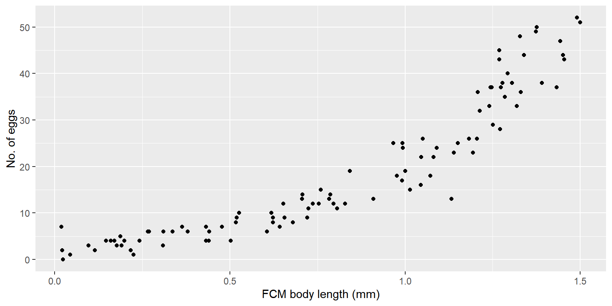Distribution of counts
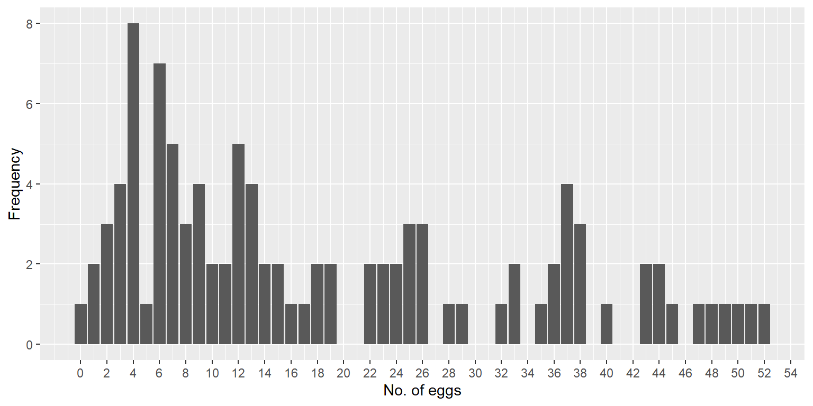Fit gaussian GLM
Any concerns?
Call:
glm(formula = no_eggs ~ body_length, family = gaussian(link = "identity"),
data = data)
Deviance Residuals:
Min 1Q Median 3Q Max
-15.794 -5.042 -0.359 4.339 13.692
Coefficients:
Estimate Std. Error t value Pr(>|t|)
(Intercept) -6.113 1.265 -4.831 5.02e-06 ***
body_length 30.839 1.376 22.420 < 2e-16 ***
---
Signif. codes: 0 '***' 0.001 '**' 0.01 '*' 0.05 '.' 0.1 ' ' 1
(Dispersion parameter for gaussian family taken to be 36.23324)
Null deviance: 21763.4 on 99 degrees of freedom
Residual deviance: 3550.9 on 98 degrees of freedom
AIC: 646.77
Number of Fisher Scoring iterations: 2- What does the (Intercept) value tell us in a Gaussian GLM?
- The expected mean value when
x= 0 - So, in this example, the expected mean
no_eggswhenbody_length= 0 is -5.12 eggs… - Impossible - This model is clearly a bad fit to the data!!!
- The expected mean value when
Model diagnostics
- Whenever you fit a model, you should always be evaluating how well the model fit the underlying data using model diagnostics.
- Diagnostics allow us to evaluate whether we captured the properties of the data adequately in our statistical model
- If the diagnostics show a poor model fit, the inferences we draw are usually going to be misleading and wrong
DHARMa
- The easiest way to perform model diagnostics in
Ris using theDHARMapackage, which uses a simulation-based approach to assess model fits.- You may have performed tests such as
Shapiro-Wilk,Bartlett's, orLevene's, in the past? - These tests are typically performed incorrectly when used, and do not have the right properties to allow you to actually assess model fit, in many cases.
- You may have performed tests such as
- To use
DHARMa, all we done is pass the variable name containing the fitted GLM model to thesimulateResidualsfunction:
DHARMa::simulateResiduals(fittedModel = model_name, plot = TRUE)
DHARMa
- Let’s assess the fit of our Gaussian GLM, it will give you two plots by default:
- QQplot
- Residual vs Predicted plot
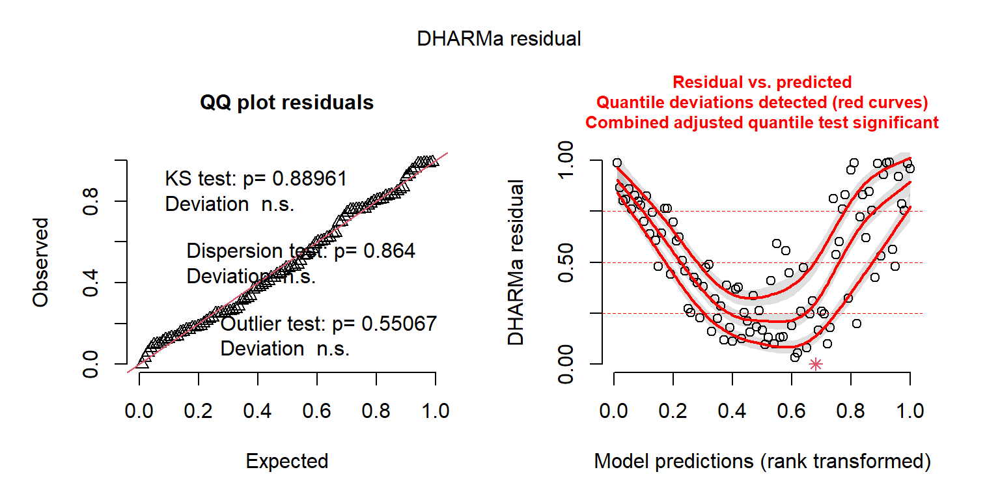
Object of Class DHARMa with simulated residuals based on 250 simulations with refit = FALSE . See ?DHARMa::simulateResiduals for help.
Scaled residual values: 0.124 0.48 0.312 0.136 0.828 0.212 0.756 0.644 0.984 0.992 0.788 0.536 0.2 0.988 0.38 0.284 0.18 0.592 0.4 0 ...Residuals
- Residuals are the way we assess model fit:
- In general, residuals are defined as the difference between the actual y value and the predicted y value from the fitted statistical model
- In this example, the residual indicates the difference in the actual
no_eggsversus the predictedno_eggswe derive from our Gaussian GLM.
- In this example, the residual indicates the difference in the actual
- In general, residuals are defined as the difference between the actual y value and the predicted y value from the fitted statistical model
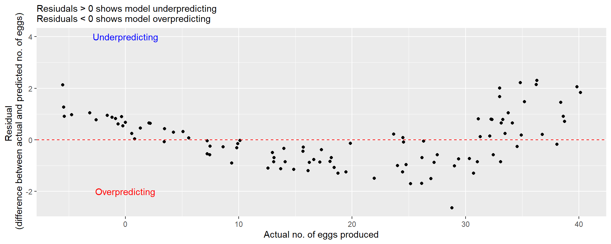
QQplot
- The
QQplottells us how well the our model captured the underlying distribution of our data.- If the distribution we fit in our model (
family = gaussian) is a good fit to the data, we will see the residuals lay approximately along the 1:1 dashed line.
- If the distribution we fit in our model (
QQplot
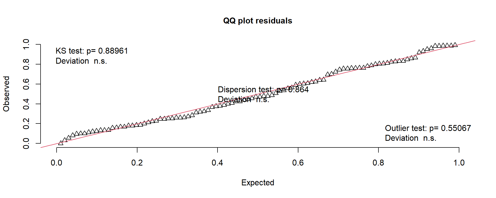- The
KS testis a formal test of the fit,- If
KS p = nsthen the data in our model is not significantly different from the distribution specified (family = gaussian), - If
KS p < 0.05then the data in our model is significantly different from the distribution specified (family = gaussian), and we need to fit a different model - Not very helpful for count models though because the Gaussian distribution and Poisson distribution can often look the same in these plots
- If
Residual vs Fitted plot
- The
Residual vs Fitted Plotshows whether the relationship between our predictor variables and response variable is linear, and whether the variance is unequal in our data.- Both evidence for a non-linear relationship and/or unequal variance would mean that the model we have fit is a poor choice for the data.
- Inspecting the plot below, we can see clear evidence for a non-linear relationship in the data (the lines are not horizontal), and unequal variance (the spread of the points for each x value is not equal).
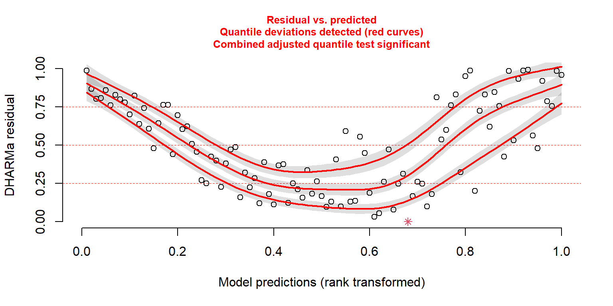
Fit Poisson GLM
Recall the general syntax to fit a Poisson GLM:
mod_poisson <- glm(Y ~ X, family = poisson(link = "log"), data = data)
mod_poisson <- glm(no_eggs ~ body_length,
data = data,
family = poisson(link = "log"))
summary(mod_poisson)
Call:
glm(formula = no_eggs ~ body_length, family = poisson(link = "log"),
data = data)
Deviance Residuals:
Min 1Q Median 3Q Max
-2.76018 -0.66884 -0.03394 0.60373 2.22450
Coefficients:
Estimate Std. Error z value Pr(>|z|)
(Intercept) 0.93107 0.08258 11.27 <2e-16 ***
body_length 2.04343 0.07064 28.93 <2e-16 ***
---
Signif. codes: 0 '***' 0.001 '**' 0.01 '*' 0.05 '.' 0.1 ' ' 1
(Dispersion parameter for poisson family taken to be 1)
Null deviance: 1165.015 on 99 degrees of freedom
Residual deviance: 75.898 on 98 degrees of freedom
AIC: 517.94
Number of Fisher Scoring iterations: 4Was this model a better fit?
- The Poisson GLM was a good fit.
- The
QQplotshows that our data are not significantly different from what would be expected under the Poisson distribution. - The
Residual vs Fitted Plotclearly indicates that the Poisson GLM was able to capture the non-linear relationship betweenno_eggsandbody_lengthadequately, and that it was able to capture the varation appropriately.
- The
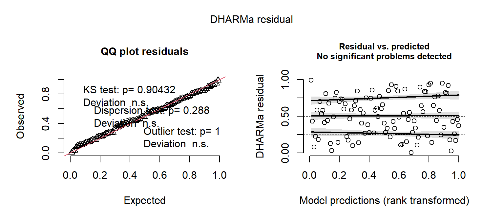
Object of Class DHARMa with simulated residuals based on 250 simulations with refit = FALSE . See ?DHARMa::simulateResiduals for help.
Scaled residual values: 0.2720664 0.02727726 0.5483345 0.335516 0.6982642 0.6108333 0.579616 0.4894552 0.9479631 0.9186634 0.2577797 0.640772 0.1424715 0.9480578 0.6418357 0.5434822 0.211667 0.9253077 0.5816072 0.004 ...Interpreting the model output
- When working with the Poisson (and other count models, e.g. negative binomial), the interpretation of the model output is different to the Gaussian GLM.
- The reason being is that the Poisson model is modelling the response variable on the log scale, not the raw data scale.
- So, to interpret results from count models on the scale of the response variable (e.g.
no_eggs), we need to exponentiate the results, using theexpfunction.
Exponentiating the (Intercept)
Call:
glm(formula = no_eggs ~ body_length, family = poisson(link = "log"),
data = data)
Deviance Residuals:
Min 1Q Median 3Q Max
-2.76018 -0.66884 -0.03394 0.60373 2.22450
Coefficients:
Estimate Std. Error z value Pr(>|z|)
(Intercept) 0.93107 0.08258 11.27 <2e-16 ***
body_length 2.04343 0.07064 28.93 <2e-16 ***
---
Signif. codes: 0 '***' 0.001 '**' 0.01 '*' 0.05 '.' 0.1 ' ' 1
(Dispersion parameter for poisson family taken to be 1)
Null deviance: 1165.015 on 99 degrees of freedom
Residual deviance: 75.898 on 98 degrees of freedom
AIC: 517.94
Number of Fisher Scoring iterations: 4- The
Interceptvalue is 0.93.- For the Gaussian GLM, we would say interpret this value as the mean
no_eggswhenbody_length= 0 is equal 0.93 eggs. - For the Poisson GLM, we need to take
exp(0.93)to transform this value into theno_eggsbody_length= 0. - The expected mean
no_eggswhenbody_length= 0 is 2.53 eggs
- For the Gaussian GLM, we would say interpret this value as the mean
(Intercept)
2.537217 Exponentiating the beta coefficient
Call:
glm(formula = no_eggs ~ body_length, family = poisson(link = "log"),
data = data)
Deviance Residuals:
Min 1Q Median 3Q Max
-2.76018 -0.66884 -0.03394 0.60373 2.22450
Coefficients:
Estimate Std. Error z value Pr(>|z|)
(Intercept) 0.93107 0.08258 11.27 <2e-16 ***
body_length 2.04343 0.07064 28.93 <2e-16 ***
---
Signif. codes: 0 '***' 0.001 '**' 0.01 '*' 0.05 '.' 0.1 ' ' 1
(Dispersion parameter for poisson family taken to be 1)
Null deviance: 1165.015 on 99 degrees of freedom
Residual deviance: 75.898 on 98 degrees of freedom
AIC: 517.94
Number of Fisher Scoring iterations: 4- The \(\beta\)1 (the coefficient for the effect of
body_length) value is 2.04.- For the Gaussian GLM, we would say interpret this value as the increase in the
no_eggsfor a 1 unit increase inbody_lengthis equal to 2.04 more eggs. - For the Poisson GLM, we need to take
exp(2.04)to transform this value to get the factor increase in theno_eggsfor a 1 unit increase inbody_length. - The factor increase in the
no_eggsfor every 1 unit increase inbody_lengthis 7.69x more eggs
- For the Gaussian GLM, we would say interpret this value as the increase in the
Compare Gaussian vs Poisson GLM
- This plot should hopefully show that fitting a Gaussian GLM to count data is usually going to produce nonsense results, and the predictions from these models will typically be very wrong and basically unusable
Hypothesis testing
- Finally, performing hypothesis testing for Poisson GLM’s is exactly the same as for the Gaussian GLM
- Fit a null model (a model without the predictor variable of interest)
Likelihood Ratio Test
- We then perform a Likelihood Ratio Test
Analysis of Deviance Table
Model 1: no_eggs ~ 1
Model 2: no_eggs ~ body_length
Resid. Df Resid. Dev Df Deviance Pr(>Chi)
1 99 1165.0
2 98 75.9 1 1089.1 < 2.2e-16 ***
---
Signif. codes: 0 '***' 0.001 '**' 0.01 '*' 0.05 '.' 0.1 ' ' 1- There is a statistically significant relationship between FCM
body_lengthand theno_eggsproduced (X2 = 1089.1, df = 1, P < 0.001).- We know that one of the models was better than the other because the P < 0.05.
- We then can tell that model 2 (
mod_poisson) is the better model because it has a lower residual deviance (Resid. Dev = 75.9) than model 1 (mod_null) (Resid. Dev = 1165.0).
Write-up results
There is a statistically significant relationship between FCM body_length and the no_eggs produced (X2 = 1089.1, df = 1, P < 0.001). For every 1 unit increase in FCM body length, the number of eggs produced per female, on average, increases by a factor of 7.69 (\(\beta\)1 = 2.04) (Figure 1).
Negative binomial distribution
- Another distribution that can be used for modelling count data is the negative binomial (NB) distribution.
- As we saw earlier in this slide deck, the difference between the Poisson and NB distribution is the assumptions of the mean = variance vs mean < variance.
- In non-statistical terms, the NB data typically has a greater spread of data (spread across the x-axis) than the Poisson
Fit NB GLM
- Whenever you model count data, I would recommend to fit both a Poisson and NB model, and compare the results and model fits.
Recall the general syntax to fit a NB GLM:
mod_nb <- glmmTMB::glmmTMB(Y ~ X, family = nbinom2, data = data)
Fit NB model
- The interpretation, model diagnostics, and inference as exactly the same as for the Poisson GLM.
- So, we won’t repeat all of that code, you can do that in your own time.
Family: nbinom2 ( log )
Formula: no_eggs ~ body_length
Data: data
AIC BIC logLik deviance df.resid
531.4 539.2 -262.7 525.4 97
Dispersion parameter for nbinom2 family (): 3.76e+08
Conditional model:
Estimate Std. Error z value Pr(>|z|)
(Intercept) 0.89769 0.08096 11.09 <2e-16 ***
body_length 2.06699 0.06775 30.51 <2e-16 ***
---
Signif. codes: 0 '***' 0.001 '**' 0.01 '*' 0.05 '.' 0.1 ' ' 1Compare Poisson vs NB GLM
- As per usual, we use the LRT
- Strange result, right?
- We can’t compare the poisson GLM fit with the
glmfunction vs the NB model fit with theglmmTMBfunction
Analysis of Deviance Table
Model: poisson, link: log
Response: no_eggs
Terms added sequentially (first to last)
Df Deviance Resid. Df Resid. Dev Pr(>Chi)
NULL 99 1165.0
body_length 1 1089.1 98 75.9 < 2.2e-16 ***
---
Signif. codes: 0 '***' 0.001 '**' 0.01 '*' 0.05 '.' 0.1 ' ' 1Refit Poisson using glmmTMB
- We have to refit the Poisson GLM using
glmmTMB
- Now we can compare the Poisson vs NB model using LRT
- There is no evidence for a significant improvement in model fit when fitting the NB model versus the Poisson model (X2 = 0.50, df = 1, P = 0.477).
- In this case, you use the simpler Poisson model
Counts model with a categorical predictor
- So far, we have been fitting models where the predictor variable (
body_length) is numeric/continuous. - But, we can easily fit counts models with a categorical/factor variable.
- E.g. If we take 40 malaise samples from each of 3 different farms (
farm) (n = 120 total samples) and compare insect species richness (sp_rich)
- E.g. If we take 40 malaise samples from each of 3 different farms (
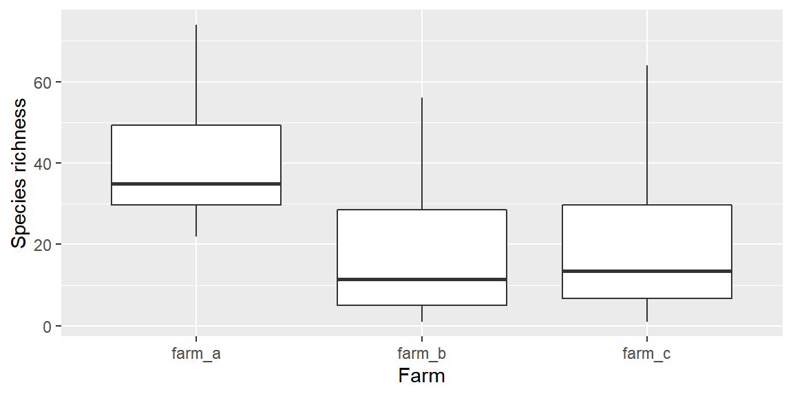
Fit Poisson with categorical predictor
- The syntax to fit the model, diagnostics and hypothesis testing is the same as for fitting the model with a numeric predictor.
Interpretation is different
- Interpreting the model summary is a bit different.
- Notice, how
farm_ais missing? Ris comparingfarm_bandfarm_ctofarm_a, which is being treated as the reference level.- Not ideal…
- Notice, how
Call:
glm(formula = sp_rich ~ farm, family = poisson(link = "log"),
data = data)
Deviance Residuals:
Min 1Q Median 3Q Max
-5.422 -2.994 -1.092 1.648 8.201
Coefficients:
Estimate Std. Error z value Pr(>|z|)
(Intercept) 3.68072 0.02510 146.63 <2e-16 ***
farmfarm_b -0.78205 0.04481 -17.45 <2e-16 ***
farmfarm_c -0.75622 0.04441 -17.03 <2e-16 ***
---
Signif. codes: 0 '***' 0.001 '**' 0.01 '*' 0.05 '.' 0.1 ' ' 1
(Dispersion parameter for poisson family taken to be 1)
Null deviance: 1656.7 on 119 degrees of freedom
Residual deviance: 1211.5 on 117 degrees of freedom
AIC: 1781.2
Number of Fisher Scoring iterations: 5Multiple comparisons
- What is the solution?
- Multiple comparisons, which compares each level to each other, not just to a reference level like
summary. - After hypothesis testing, it allows us to tell which levels within a significant factor are different from one another.
- Multiple comparisons, which compares each level to each other, not just to a reference level like
Perform multiple comparisons
- We already know that there were significant differences in insect species richness between farms, but we don’t know which farms were different from one another
contrast estimate SE df z.ratio p.value
farm_a - farm_b 0.7821 0.0448 Inf 17.454 <.0001
farm_a - farm_c 0.7562 0.0444 Inf 17.027 <.0001
farm_b - farm_c -0.0258 0.0522 Inf -0.495 0.8735
Results are given on the log (not the response) scale.
P value adjustment: tukey method for comparing a family of 3 estimates - The
estimatecolumn gives the \(\beta\) co-efficient for each comparison, on the log scale.- It gives the factor increase going from the first level to the second level, once we exponentiate the value
- e.g. The
estimatefor thefarm_a - farm_bcomparison is 0.913 (positive) and statistically significant (P < 0.001), which tells us that insect richness is higher atfarm_athanfarm_b. - Taking
exp(0.913)gives us a value of 2.49. - So, insect species richness is 2.49 times higher at
farm_athanfarm_b.
- e.g. The
- It gives the factor increase going from the first level to the second level, once we exponentiate the value
Test yourself
- Given the dataset in the
Datatab, consisting of 200 agar plates grown with 5 different growth media (40 plates per growth medium) (growth_medium) and the no. of fungal colonies counted per plate (no_colonies):- Should we be growing our fungal cultures on one particular growth medium, or is the no. of fungal colonies produced similar across all the growth media?
- If we should be using a particular growth medium, which medium should we use?
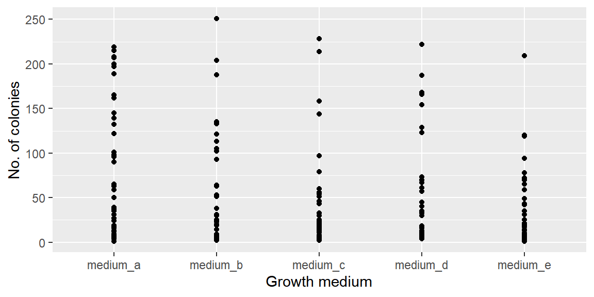
# Use package manager to check, install and load required packages
if (!require("pacman")) install.packages("pacman")
pacman::p_load(
# List the packages you need below
tidyverse,
glmmTMB,
DHARMa
)
# Set seed
set.seed(2021)
# Set sample size
n <- 200
# Specify regression coefficients
beta0 <- 1 # B0
beta1 <- 3 # B1
# Generate covariate values
body_length <- runif(n=n, min=0, max=1.5)
# Compute mu's
mu <- exp(beta0 + beta1 * body_length)
# X factor variable
growth_medium <- rep(letters[1:5], each = 40)
# Generate Y-values
no_colonies <- rpois(n=n, lambda=mu)
# Data set
data <- data.frame(growth_medium, body_mass = body_length, no_colonies) %>%
dplyr::mutate(growth_medium = paste("medium",growth_medium, sep = "_"))Plot the no. of colonies by growth medium
Plot the distribution of colony counts by growth medium
Fit Gaussian GLM, not 100% necessary
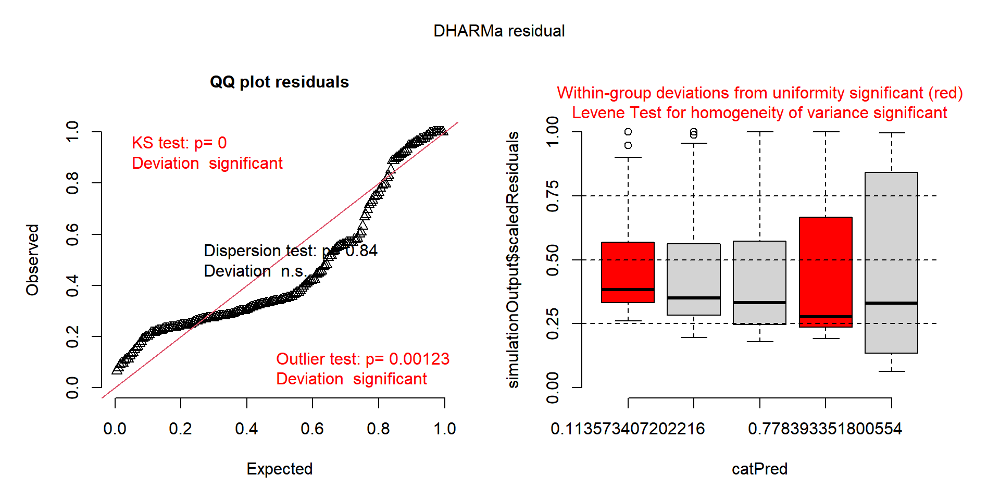
Object of Class DHARMa with simulated residuals based on 250 simulations with refit = FALSE . See ?DHARMa::simulateResiduals for help.
Scaled residual values: 0.148 0.58 0.348 0.156 0.22 0.3 0.38 0.108 0.58 0.96 0.096 0.752 0.312 0.172 0.508 0.132 0.16 0.792 0.972 0.208 ...Fit Poisson GLM
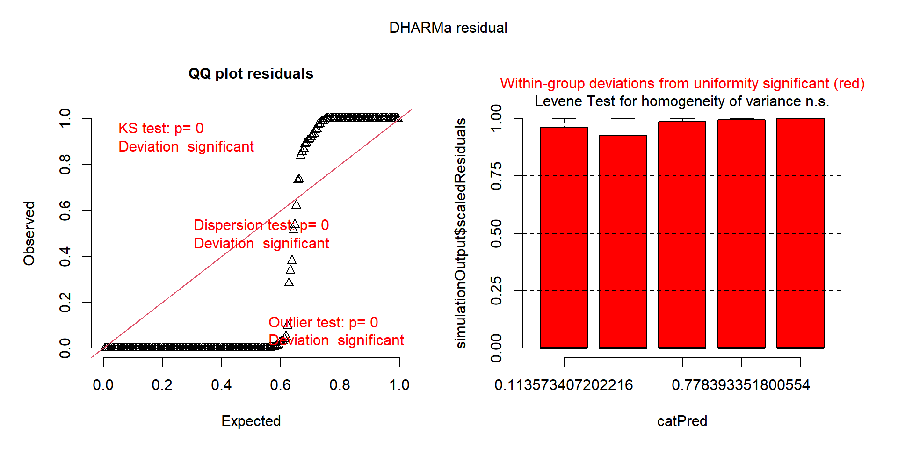
Object of Class DHARMa with simulated residuals based on 250 simulations with refit = FALSE . See ?DHARMa::simulateResiduals for help.
Scaled residual values: 0 0.8524651 0 0 0 0 0.0150827 0 0.9098975 1 0 1 0 0 0.73191 0 0 1 1 0 ...Fit Negative Binomial GLM
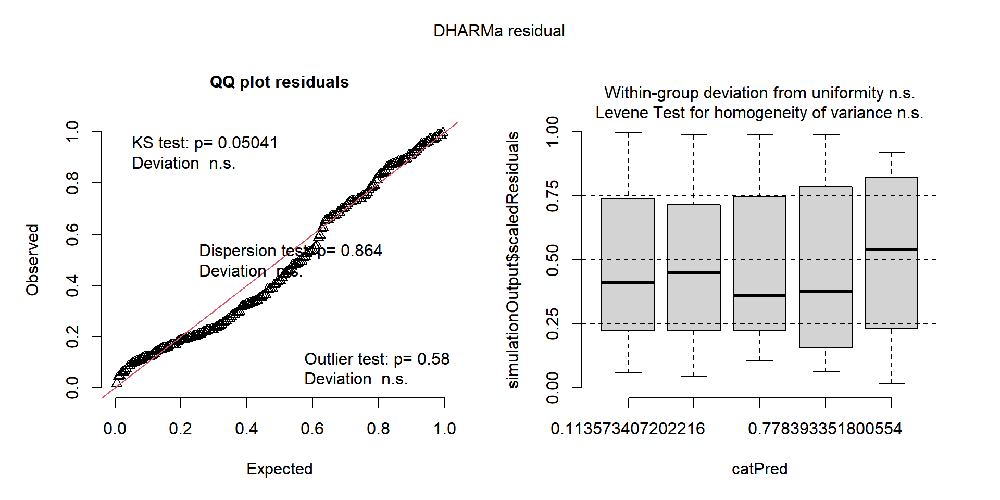
Object of Class DHARMa with simulated residuals based on 250 simulations with refit = FALSE . See ?DHARMa::simulateResiduals for help.
Scaled residual values: 0.2697015 0.7 0.5240064 0.2190504 0.388 0.5970532 0.555846 0.1197963 0.7311763 0.896 0.04313612 0.7635574 0.4581031 0.36 0.704 0.147136 0.268582 0.8364983 0.8777219 0.34 ...Hypothesis test for growth_medium effect
Data: data
Models:
mod_null: no_colonies ~ 1, zi=~0, disp=~1
mod_nb: no_colonies ~ growth_medium, zi=~0, disp=~1
Df AIC BIC logLik deviance Chisq Chi Df Pr(>Chisq)
mod_null 2 1983.5 1990 -989.72 1979.5
mod_nb 6 1977.2 1997 -982.63 1965.2 14.198 4 0.00669 **
---
Signif. codes: 0 '***' 0.001 '**' 0.01 '*' 0.05 '.' 0.1 ' ' 1Multiple comparisons
contrast estimate SE df t.ratio p.value
medium_a - medium_b 0.5303 0.249 194 2.132 0.2110
medium_a - medium_c 0.6134 0.249 194 2.465 0.1030
medium_a - medium_d 0.5728 0.249 194 2.302 0.1486
medium_a - medium_e 0.8979 0.249 194 3.603 0.0036
medium_b - medium_c 0.0831 0.249 194 0.334 0.9973
medium_b - medium_d 0.0425 0.249 194 0.171 0.9998
medium_b - medium_e 0.3676 0.250 194 1.472 0.5817
medium_c - medium_d -0.0406 0.249 194 -0.163 0.9998
medium_c - medium_e 0.2844 0.250 194 1.139 0.7857
medium_d - medium_e 0.3250 0.250 194 1.302 0.6905
Results are given on the log (not the response) scale.
P value adjustment: tukey method for comparing a family of 5 estimates Plot model predictions
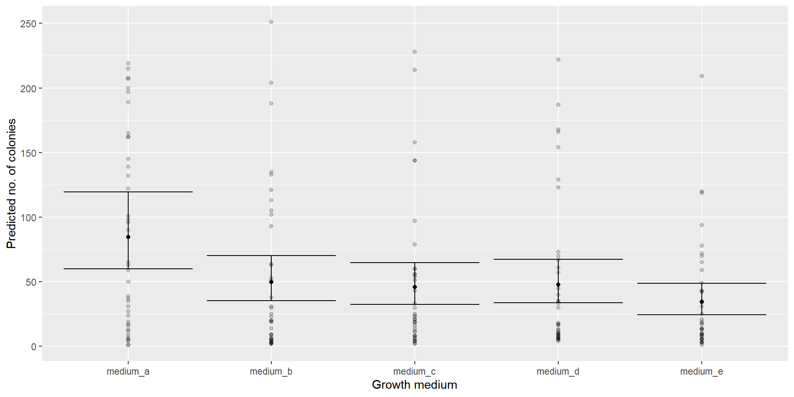
# Extract predictions
preds <-
ggeffects::ggpredict(
mod_nb,
terms = c("growth_medium"),
type = "fe",
interval = "confidence"
# interval = "prediction"
) %>%
as.data.frame() %>%
dplyr::rename(growth_medium = x)
# Make plot
preds %>%
ggplot(data = ., aes(x = growth_medium, y = predicted)) +
geom_point() +
geom_errorbar(aes(ymin = conf.low, ymax = conf.high),
alpha = 1) +
geom_point(data = data,
aes(x = growth_medium, y = no_colonies),
alpha = 0.2) +
labs(
x = "Growth medium",
y = "Predicted no. of colonies"
)